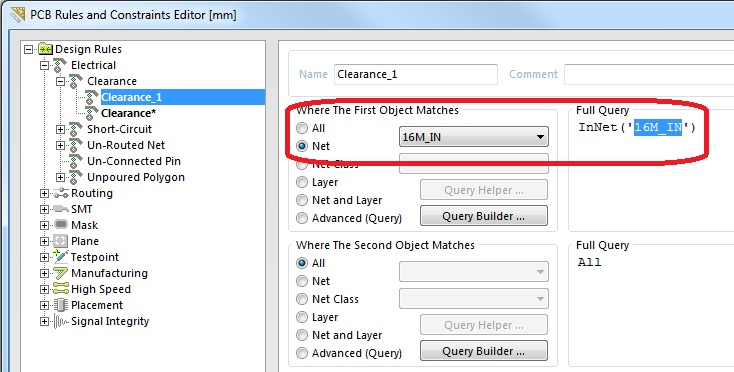

Порядок создания правил в Altium
В данной статье будет описан ход создания правил, что позволяет сосредоточиться на задачах проектирования, зная, что любые ошибки проекта будут замечены системой. Это означает, что во время работы с редактором плат и выполнения действий, меняющих проект, такие как ввод трасс, перемещение компонентов, или автоматическую трассировку, редактор проводит постоянный мониторинг каждого действия и контролирует нарушения установленных правил проектирования. В качестве примера был открыт проект Bluetooth Sentinel, который находится в папке Examples.
Перед начало работы с правилами необходимо убедиться, что включена метрическая системе координат, в противном случае значения правил будут отображаться в милсах (1 mil = 0,0254 мм). Для включения метрической системы координат используется строка Units диалогового окна Design > Board Options.
1) В редакторе плат необходимо выполнить команду Design>Rules для открытия диалогового окна PCBRules andConstraintsEditor.
{kind=link}
Рис.1. Диалоговоеокно PCB Rules and Constraints Editor
2) создадим новое правило. Дважды нажмите па категории Electricalдалее Clearance, для пополнения категорий и просмотра правил, касающихся допустимых расстояний между объектами. Нажимаем правую кнопку мыши в пункте Clearance и выбираем команду New Rule (см. рис. 2). В списке правил появилось новое правило, которое по умолчанию названо Clearance_1. Все правила должны иметь уникальные названия, иначе программа не сохранит созданные правила. Название правила вводится в поле Name.
{kind=link}
Рис.2. Создание нового правила
3) Следующим шагом необходимо указать области действия правила. Область действия может быть указана вручную или с помощью языка запросов Query Helper и составителя запросов Query Builder. При ручном выборе области действия правила могут быть выбраны следующие варианты:
? All – все проводники платы;
? Net – одна выбранная цепь;
? Net Class – класс цепей;
? Layer – все цепи, расположенные на данном слое;
? Net and layer – определённая цепь на данном слое.
В качестве примера выбираем, указываем область применения цепь с названием «16M_IN». Для этого в поле WhereTheFirstObjectMatchesвыбираем Net (одна выбранная цепь) и справа в контекстном меню выбираем название интересующей нас цепи (см. Рис.3). Более сложные области действия правил задаются с помощью запросов (Query).
Рис.3. Выборобласти применения
4) Далее нам необходимо установить значение правила. Для чего используется нижняя часть окна (область Constreints). Стоит отметить что, начиная с Altium Designer 14,3 в поле Constreintsпоявилась матрица минимальных зазоров. Используя матрицу можно точно настроить зазоры между любыми объектами в проекте. В сочетании с правилом — определения области применения, есть все необходимое для создания краткого и целенаправленного набора правил для удовлетворения даже самых сложных проектов.
{kind=link}
Рис.4. Матрица минимальных зазоров
Устанавливаем в матрице значение 0,2 как показано на рисунке 4.
5) На следующем шаге необходимо установить приоритет между правилами одной группы. Области действия различных правил могут пересекаться между собой. Например, цепь «16M_IN», которую мы описали ранее, входит в наше правило, но также она участвует в базовом правиле, которое задаёт зазоры на все электрические примитивы на плате. Для того что бы выполнялось интересующее нас правило ему необходимо установить соответствующий приоритет. В программе Altium Designer для установки приоритетов используется специальное диалоговое окно Edit Rule Priorities (см. рис. 5), которое вызывается кнопкой Priorities в левом нижнем углу окна PCB Rules. Правила выполняются в том порядке, в котором они перечислены в списке окна EditRulePriorities, причём если цепь «16M_IN» уже указана в первом по порядку правиле, то она автоматически исключается из всех последующих правил данной группы.
{kind=link}
Рис.5. Установка приоритета правил
Заканчивается процедура создания правил нажатием кнопки Apply в окне создания правил. Если новое правило создается в готовом проекте, то после выхода из диалогового окна PCBRulesandConstraintsEditorпрограмма автоматически начинает проверку выполнения нового правила (см. Рис.6).
{kind=link}
Рис. 6. Автоматическая проверка выполнения правил